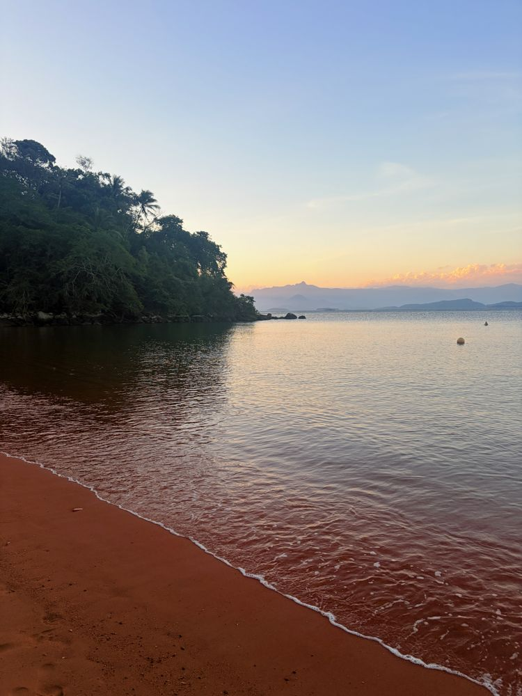

EXPERIENCIA RIO IA
Angra dos Reis
e Ilha Grande
Un día entero de aguas cristalinas, islas verdes y playas paradisíacas, a pocas horas de Río.
Día completoPaseo en barcoIslas y playasAlmuerzo
VALORDesde R$ 250
Por persona, con traslado ida y vuelta desde Río, paseo en barco y almuerzo.
La experiencia
Salida en barco
Rumbo a las islas desde el muelle, entre escunas y lanchas.

Aguas cristalinas
Calas verdes y turquesas para nadar y sacar fotos.
Cascadas
Agua dulce en medio de la Mata Atlántica.
Momentos reales de nuestros paseos
 Nuestro grupo a bordo
Nuestro grupo a bordoMoto de agua
 Playas
PlayasAtardeceres
 Arena y mar
Arena y mar Angra dos Reis
Angra dos Reis Al caer el sol
Al caer el solBarcos en la bahía

Islas de AngraRincones
Fotos y videos reales de nuestros paseos.
Qué incluye
- Traslado ida y vuelta desde Río
- Paseo en barco por las islas de Angra
- Paradas para nadar en aguas cristalinas
- Almuerzo
- Coordinación por WhatsApp de principio a fin
Qué llevar
- Malla, toalla y protector solar
- Documento con foto
- Efectivo para bebidas y extras
Bueno saber
Es un paseo de día completo: salida temprano a la mañana y vuelta a la noche. El recorrido en barco depende del clima y del mar.
Cómo reservar
Reserva: se confirma con el pago del 100%, por Pix o tarjeta (con tarjeta +5%). Te confirmamos todo por WhatsApp.
Reservar por WhatsApp